SwiftUI · Pet Education · Gamification
Goodboy养宠责任教育 App
针对养宠前知识缺失与责任意识不足的问题，以 30 天虚拟养犬体验将喂养、清洁、训练等真实行为转化为每日任务，并结合 AI 助手“沃夫问答”提供个性化指导。
Scroll / seamless story
Project
Story
从养宠责任问题与用户研究出发，连续呈现产品定位、虚拟养犬流程、AI 问答和界面实现，按 01–15 顺序展开。
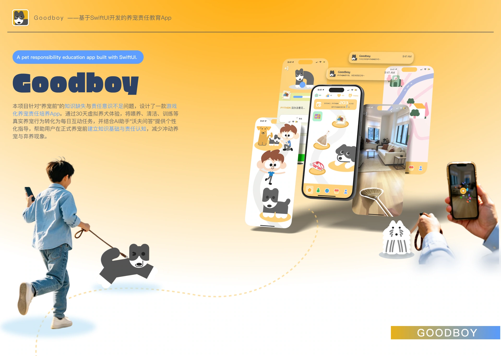
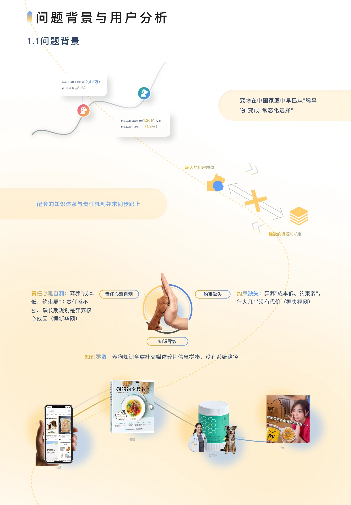
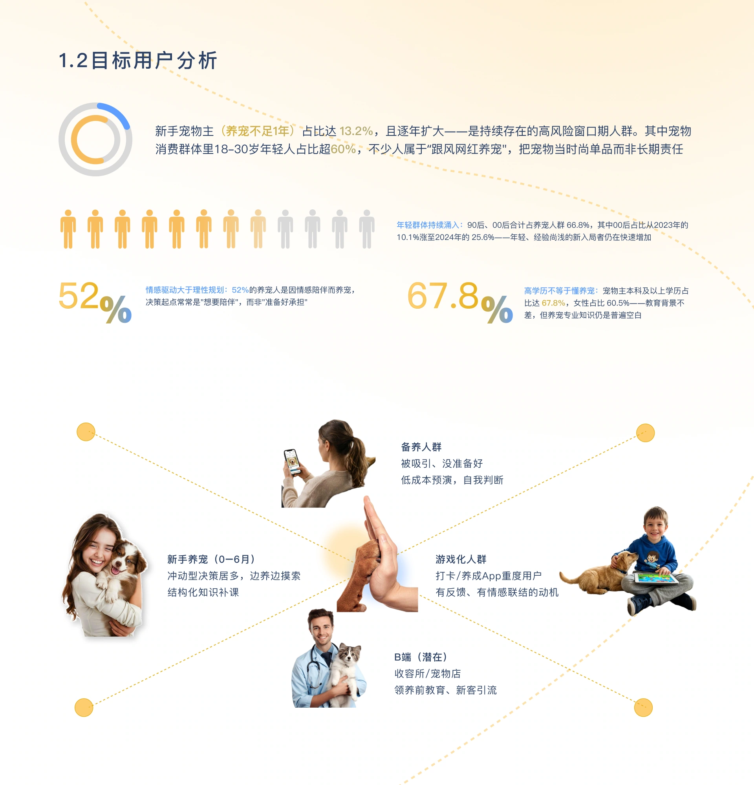
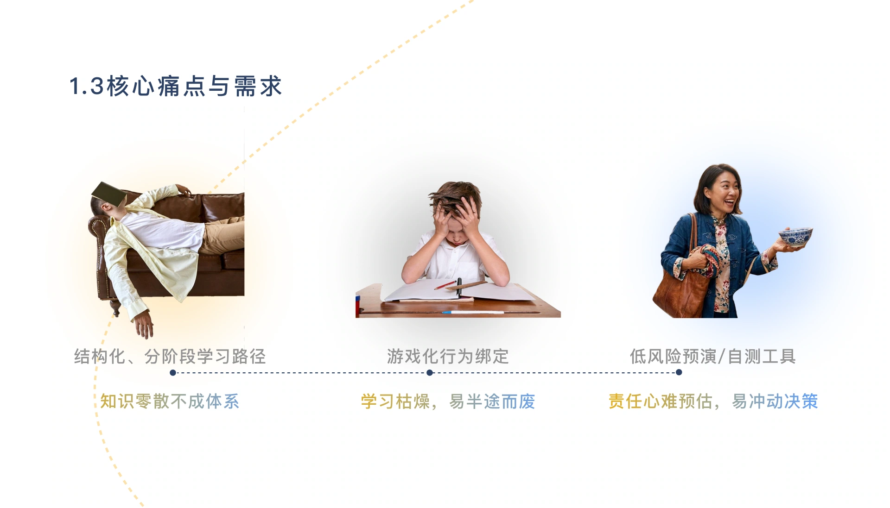
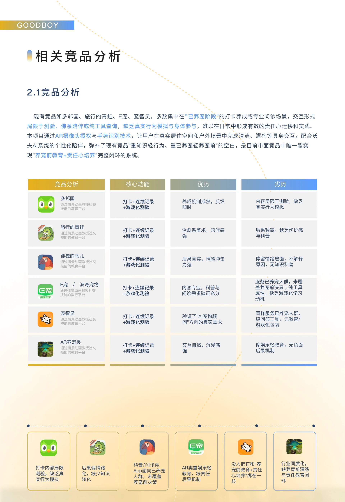
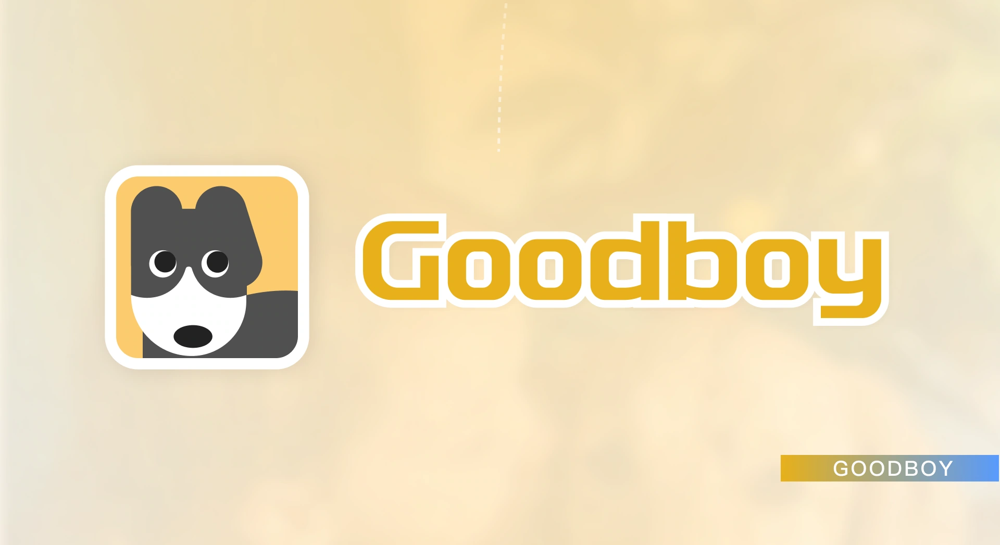
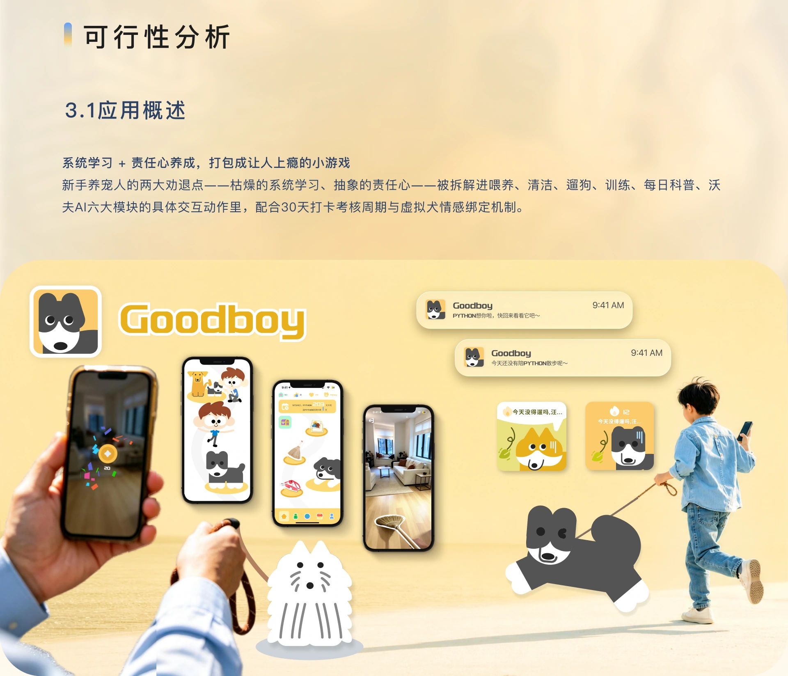
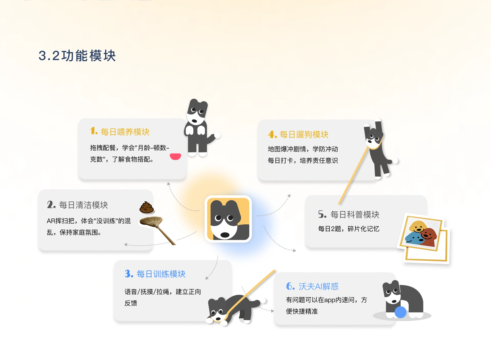
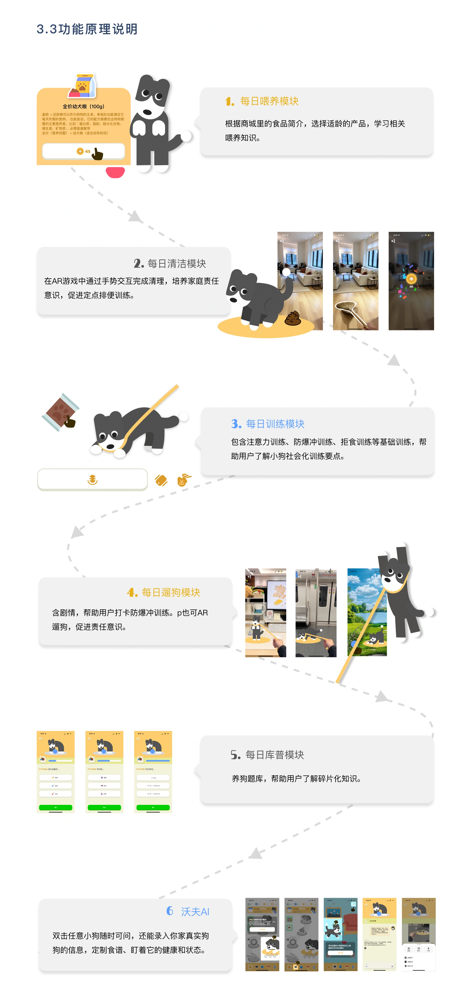
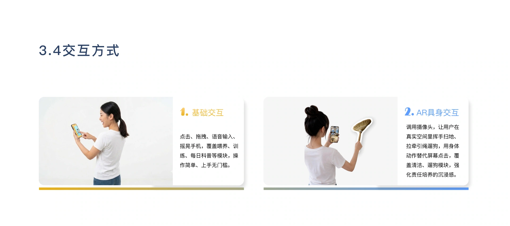
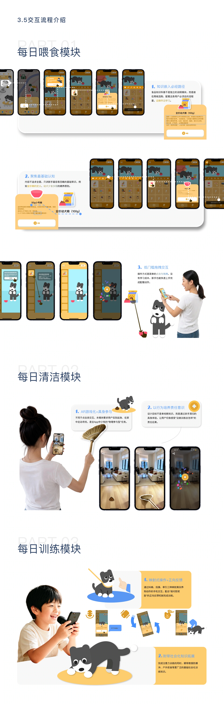
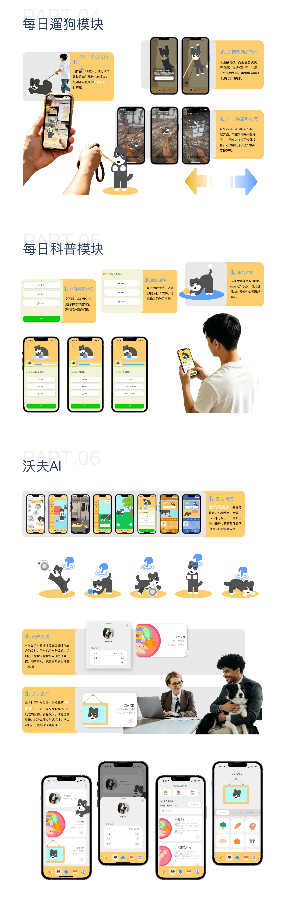
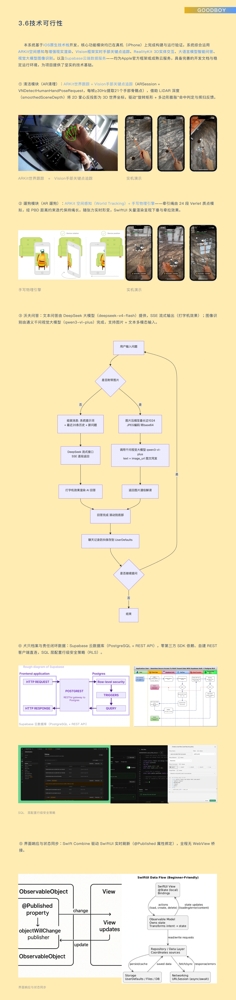
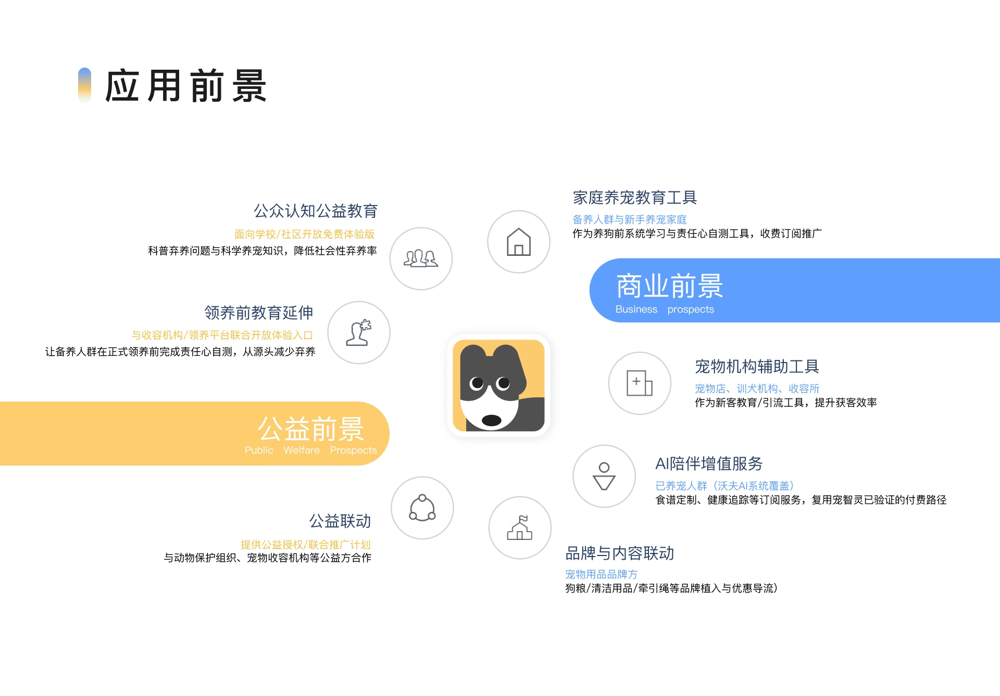
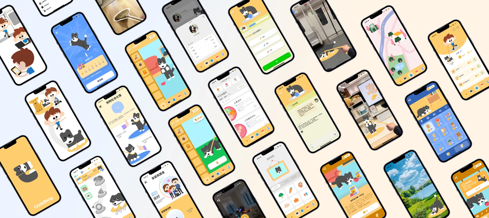